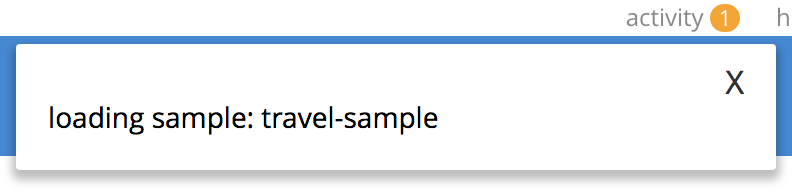

Couchbase Web Console
The features of Couchbase Server can be managed by means of Couchbase Web Console.
Understanding Couchbase Web Console
Couchbase Web Console is a browser-based, interactive graphical facility that supports the management of Couchbase Server. This includes:
-
Monitoring performance and server-state, by means of constantly updated statistics, displayed in customizable, interactive charts.
-
Configuring services, including indexes.
-
Adding and removing cluster-nodes.
-
Setting up Cross Data Center Replication.
-
Interactively composing documents, and executing queries.
-
Managing security; including the addition of users, the assignment of roles, and the configuration of external authentication mechanisms.
The range of features made available depends on the roles that have been assigned to the user who logs into the console. If the user has been assigned the Full Administrator role, they have complete access to all features; and can therefore read, write, execute, and manage without constraint. Other roles limit the feature-range. For detailed information, see Roles.
This page provides an overview of the complete feature-set made available by Couchbase Web Console. In many cases, detailed explanations of the user interface is provided elsewhere in the documentation-set, in correspondence with the supported feature. Links are provided in each case.
Accessing the Console
Couchbase Web Console is typically accessible at port 8091, of the host system, although the port number may be different if secure console-access has been established: see Manage Console Access, for information. When the appropriate port is accessed, the following interface is displayed:
The interface provides two options:
-
Setup New Cluster: which establishes the current server as an independent cluster of one node, to which other nodes can subsequently be added.
-
Join Existing Cluster: which establishes the current server as a node that is part of a pre-existing cluster.
These procedures, which include establishing credentials for administrator-authentication, are described in detail in Create a Cluster. The remaining information on this page assumes that a cluster of one node has been established. The features of the console will be portrayed in their entirety, as visible to the Full Administrator.
Authenticating with the Console
Once the cluster is running, all its administrators must authenticate, in order to access its features. Therefore, when port 8091 is accessed by means of the browser, the following interface is displayed:
Enter username and password, and left-click on the Sign In button to access the console.
Detailed information on authenticating with Couchbase Server is provided in Authentication.
Understanding the Dashboard
On the user’s successful login, the console displays the Dashboard. If this is the user’s first-time access, the appearance is as follows:
The display thus consists of a banner with interactive controls; a main panel, which allows display of data and configuration fields; a left-hand navigation bar, which allows the main panel’s content to be determined; and a lower panel, which displays current status on the cluster. These are described below.
Banner
At the left, the banner features the name of the console, as determined during server-setup. It also displays the name of the currently displayed screen, Dashboard. At the right, it provides information identifying the version of the server that is being run, and the build number.
In the white horizontal band immediately above the banner, at the right-hand side, three interactive options appear:
-
activity. When Couchbase Server is engaged in an activity of any considerable duration (such as loading data, or distributing data across multiple nodes), an alert is provided; in the form of an interactive, orange icon. Left-click on this, to display the notification. For example:
 -
help. Tabs that respectively allow all customers to access documentation for the server-release; and allow certain customers to contact Couchbase Customer Support.
-
Administrator. Tabs that respectively allow administrators to redefine their password; and to sign out of the console.
Main Panel
The content of the main panel changes, based on selections made by the user in the left-hand navigation bar. The default display is that of the Dashboard.
Initially, a notification appears; explaining that no data buckets currently exist, and providing options for the addition of buckets.
Such addition is required prior to Dashboard-customization; since all statistics will be presented in relation to existing buckets.
The procedure for adding a sample bucket is provided in Install Sample Buckets.
After this procedure is followed for the travel-sample bucket, the Dashboard screen appears as follows:
The Cluster Overview thus displays animated charts that provide a variety of information on the status of data-management on the cluster. Additional information can be displayed by left-clicking on the Node Resources tab.
The Cluster Overview display can be alternated with the All Services display, by means of the pull-down menu at the upper left:
The user is also able to add charts incrementally, in order to display continuously updated sets of statistics. In consequence, the Dashboard is assembled differently by each user. Detailed information on incrementally adding charts and on how to read them is provided in Manage Statistics.
Navigation Bar
The vertical navigation bar, which appears at the left-hand side, provides a tab for each of the major features that can be accessed and managed. On initial console-access, the Dashboard tab, at the top, is selected by default. Information is provided below on each of the possible selections.
Note that when the mouse cursor is hovered over elements in the navigation bar, a toggle appears at the lower left. Left-clicking on this causes the navigation bar to be collapsed, thereby freeing up more horizontal space for the main panel.
The toggle remains accessible, and can be used to restore the navigation bar at any time.
Lower Panel
The lower panel provides information on cluster status.
-
Nodes are represented by icons in green, orange, or red; according to whether they are active, failed-over, pending-rebalance, or inactive. Detailed information on nodes, their status, and how they can be managed is provided in Manage Nodes and Clusters.
-
Installed Services and Cross Data Center Replication are represented by icons in green or grey, If a service-icon is green, this indicates that it is installed and running. If it is grey, it is not installed. Cross Data Center Replication (XDCR) does not require installation; and is either green or grey depending on whether a replication is in process.
Information on services is provided in Services. Information on XDCR is provided in Cross Data Center Replication (XDCR).
System notifications are shown, as required, in the lower left-hand corner of the main panel. These are green to indicate success, orange to indicate warnings of actual or potential problems, and red to indicate failure. For example:
Note that red notifications provide a red, interactive X, which must be left-clicked on, to dismiss the notification.
Green and orange notifications are self-dismissive.
Accessing Features
Couchbase Web Console allows users to access features by left-clicking on tabs. Tabs are located:
-
In the left-hand navigation bar. Whenever a tab is left-clicked on, the appearance of the console’s main panel changes, to display content for the selected feature.
-
In the upper, horizontal navigation bar. This appears, for some features, immediately above the main panel. Whenever a tab is left-clicked on, the appearance of the main panel changes, to display alternative content for the feature selected from the left-hand navigation bar.
The remaining sections on this page describe in turn the features accessed by left-clicking on the tabs provided.
Servers
Left-click on the Servers tab, in the left-hand navigation bar:

The main panel changes, to display the Servers screen. Its initial appearance is as follows:
The Servers screen provides information on every node in the cluster. In this case, the cluster consists of a single node: therefore, a single row of information is displayed, for the current node. This information includes the following:
-
name. The name of the node, established during setup.
-
group. The group of which the node is currently a member. For conceptual information on groups, see Server Group Awareness. For practical information on group management, see Manage Groups.
-
services. The services installed on the node. In this case, six of the seven services have been installed and are running: analytics, data, eventing, index, query, and search. Note that five of these six services have an identically named tab corresponding to them, in the left-hand navigation bar; whereby service-specific configuration and management can be performed. The Backup Service, which has not been installed on this instance, also has a tab in the left-hand navigation bar. The only service not to have a tab is the Data Service; which is managed by means of the Buckets, Documents, and Views tabs. Information on all of these tabs is provided below.
For conceptual information on services, see Services.
-
CPU, RAM, swap, disk used. Information on resource-consumption, on the specified node.
-
items. The active and replica data items currently residing on the node. For information on intra-cluster replication, see Intra-Cluster Replication.
-
Statistics Left-click on this interactive tab, to display interactive statistics-charts for the bucket, on the console’s Dashboard. Note that statistics are only available when at least one bucket has been installed.
Above the server-information row, two additional controls are provided:
-
filter servers… To filter the display of servers (when there are multiple servers listed), enter a string. Only servers whose names provide a match are then displayed.
-
Rebalance. Left-clicking on this control causes a rebalance to be performed, across the cluster. For conceptual information on rebalance, see Rebalance. For practical information on performing rebalance, see Add a Node and Rebalance.
To the right-hand side of the banner, three further controls appear:
-
Groups. Allows management of server groups, as described in Manage Groups.
-
Failover. Allows one or more nodes to be failed over, as described in Fail a Node Over and Rebalance.
-
Add Server. Allows a server to be added to the current cluster, as described in Add a Node and Rebalance.
For an example of the Servers screen with a cluster of multiple nodes, see the three node cluster used in Recover Data with XDCR.
Servers: Learn and Manage
To learn about servers, see Nodes. To manage servers, see Manage Nodes and Clusters.
Buckets
To access the Buckets screen, left-click on the tab in the left-hand navigation bar:
This brings up the Buckets screen, which initially appears as follows:
As with the Dashboard, described above, before any bucket has been added to the server, the Buckets screen is almost blank. A notification is provided, with options to use the Add Bucket control at the upper right, or to Install Sample Buckets, in order to add a bucket containing data that is ready to support testing and experimentation.
After the travel-sample bucket has been added, by means of the procedure described in Install Sample Buckets, the Buckets screen appears as follows:
The Buckets screen displays each bucket on its own row, with supporting information distributed horizontally, in columns. The column headings are:
-
name. The name of the bucket.
-
items. The number of data items (typically referred to as documents) within the bucket.
-
resident. The percentage of the items resident on the current node.
-
ops/sec. The number of operations per second being performed on the bucket’s data.
-
RAM used/quota. The amount of memory currently being used by the bucket, against its total allocated quota for this node.
-
disk used. The amount of disk used by the bucket, on this node.
To the right-hand side of the column, twoe tabs are provided, whereby additional information can be accessed. The Documents tab allows the documents within the bucket to be individually read and edited. This facility can also be accessed by means of the Documents tab, in the left-hand navigation bar; as explained in Documents, below. The Scopes & Collections tab provides access data-containers within the bucket, whereby documents can be organized according to type: for information, see Scopes and Collections.
Buckets: Learn and Manage
A conceptual account of buckets is provided in Buckets. Information on how to manage buckets is provided in Manage Buckets.
XDCR
To access the XDCR screen, left-click on the tab in the left-hand navigation bar:
This brings up the XDCR screen, which initially appears as follows:
XDCR (Cross Data Center Replication) replicates data between clusters, providing protection against data center failure. Replication occurs from a specific bucket on the source cluster to a specific bucket on a target cluster.
In its initial display, the XDCR screen provides a panel named Remote Clusters. This will list the clusters that have been defined as targets for replication. It also provides a panel named Outgoing Replications, which will list the replications that are in process between source and target clusters.
XDCR: Learn and Manage
An extensive conceptual overview of XDCR is provided in Cross Data Center Replication (XDCR). Instructions on setting up and performing XDCR are provided in XDCR Management Overview.
Security
To access the Security screen, left-click on the tab in the left-hand navigation bar:

This brings up the Security screen:
The Security screen can be displayed in four distinct views, each corresponding to a separate area of security-management. These are accessed by means of tabs, distributed across the upper horizontal navigation bar. They are Users and Groups, Certificates, Audit, and Other Settings. For information on these screens, and links to further information on the security features they support, see Manage Security Settings.
Security: Learn and Manage
An extensive conceptual overview of Couchbase Server security is provided in Security. For practical steps towards securing a cluster, see Security Management Overview.
Settings
To access the Settings screen, left-click on the tab in the left-hand navigation bar:

This brings up the Settings screen:
The Settings screen allows configuration of a variety of important parameters within Couchbase Server. Like the Security screen, it provides multiple views, each corresponding to a separate feature set, and accessed by means of tabs, distributed across the upper horizontal navigation bar. The tabs are General (displayed by default), Auto-Compaction, Alerts, and Sample Buckets.
Manage Settings
Further information is provided in Manage Settings.
Logs
To access the Logs screen, left-click on the tab in the left-hand navigation bar:

This brings up the Logs screen:
The Couchbase Logging facility records important events, and saves the details to log files, on disk. Additionally, subsets of information are provided on the Logs screen.
The Logs screen offers two views, one of which is the default representation of logged information. The other is a facility for configuring explicit logging, which allows comprehensive and fully updated information to be generated as required.
Manage Logs
Full details are provided in Manage Logging.
Documents
To access the Documents screen, left-click on the tab in the left-hand navigation bar:
This brings up the Documents screen:
This screen displays the documents contained within installed buckets. The screen is currently blank, since no buckets have yet been installed. The Location control permits a bucket to be selected from those installed, and for a scope and a collection within the bucket to be selected. Other controls allow specific documents to be displayed, according to configured parameters. (For information on scopes and collections, see Scopes and Collections).
The easiest way to install a bucket containing data is described in Install Sample Buckets.
If the travel-sample is installed, the screen appears as follows:
The internal content of documents can now be displayed and edited.
The Documents screen presents two separate panels, which are accessible from the horizontal navigation bar along the top. The Workbench panel is the default, currently displayed. A full description of this panel and its contents is provided in Explore the Server Configuration, which is part of the the Getting Started sequence. For an explanation of the Import panel, see Import Documents.
To edit a document, left-click on a document-id that appears in the id column of the Workbench panel. This brings up the Edit Document dialog, which features an interactive Data panel, whereby the document’s contents can be edited:
To examine the document’s metadata, left-click on the Metadata button, at the upper right of the Edit Document dialog. This duly brings up the Metadata panel (which is read only).
For instructions on installing a sample bucket, which contains documents that are ready to be inspected and experimented with, see Install Sample Buckets.
Learn about Documents
For a full explanation of documents, and an overview of the Couchbase data model, see Data.
Query
To access the Query screen, left-click on the tab in the left-hand navigation bar:
This brings up the Query screen:
Initially, even though the cluster is running the Query Service, no content may be displayed. Content is presently displayed, provided that the cluster is running the Index Service:
This screen now features the Query Workbench: an interactive tool that lets you compose and execute SQL++ queries on the data contained by the bucket.
In its initial display, the tool shows the sequence of SQL++ commands that have been executed to create the scopes and collections within travel-sample: for information, see Scopes and Collections.
Query: Learn, Manage, and Use
For information on the Query Service, see Query Service. For information on using the Query Workbench to make SQL++ queries, see Run Your First SQL++ Query, which is part of the Getting Started sequence. For information on SQL++, see the SQL++ Language Reference.
Indexes
To access the Indexes screen, left-click on the tab in the left-hand navigation bar:
This brings up the Indexes screen:
The screen is initially blank, since no buckets have yet been added.
If a bucket is defined, and data loaded into it, indexes must then be defined on the data, before they are registered on the Indexes screen.
However, sample buckets have data and indexes predefined.
The procedure for adding a sample bucket is provided in Install Sample Buckets.
After this procedure is followed for the travel-sample bucket, the Indexes screen appears as follows:
Note that initially, the status column provides ongoing figures for mutations remaining: this indicates that the indexes for the bucket are still being prepared. When the indexes have been fully prepared, the mutations remaining notifications are no longer displayed:

Indexes: Define and Manage
For a detailed explanation of indexes, see Global Secondary Indexes. Information on how to manage indexes is given in Manage Indexes.
Search
To access the Search screen, left-click on the tab in the left-hand navigation bar:
This brings up the Full Text Search screen:
The screen contains panels for Search Indexes and Aliases. Both panels are currently blank, since nothing has yet been created.
Creation of both is explained in Searching from the UI.
Search: Learn and Manage
For an explanation of the Search Service, and detailed examples of search-index creation, see Full Text Search: Fundamentals.
Analytics
To access the Analytics screen, left-click on the tab in the left-hand navigation bar:
This brings up the Analytics screen:
The screen contains an Analytics Query Editor, and a panel for Analytics Query Results. Both panels are currently blank.
Analytics: Learn and Manage
For an explanation of the Analytics Service, see the Introduction to Analytics.
Eventing
To access the Eventing screen, left-click on the tab in the left-hand navigation bar:
This brings up the Eventing screen:
The screen is currently blank, since no Eventing functions have yet been defined.
Eventing: Learn and Manage
For an explanation of the Eventing Service, see Eventing Service: Fundamentals.
Backup
To access the Backup screen, left-click on the tab, in the left-hand navigation bar:
This brings up the Repositories screen, of the Backup Service:
The screen is currently blank, since no Backup-Service repositories have yet been defined.
Backup: Learn and Manage
For an overview of the Backup Service, see Backup Service. For step-by-step instructions on how to configure the scheduled backup of cluster-data, see Manage Backup and Restore.
Views
To access the Views screen, left-click on the tab in the left-hand navigation bar:
This brings up the Views screen:
The screen is currently blank, since no Views have yet been defined.
Views: Define and Manage
For a detailed explanation of Views, see Views.